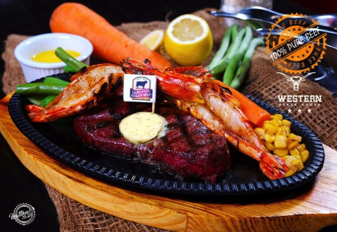

～私のお勧めするレストラン～  私のお勧めするレストランはズバリ、「WESTERN STEAK HOUSE」。 概要:セブ島のマクタンにある、アンガス牛を使った本格的なステーキを味わえるお店。オーナーの方が日本人で、非常に気さくなスタッフが多いです。店内は名前の通りウエスタンな雰囲気を味わえるため、写真映え間違いなしです！ステーキもとても美味しかったのですが、マンゴーラッシーのような飲み物が最高にうまかったです！（笑）